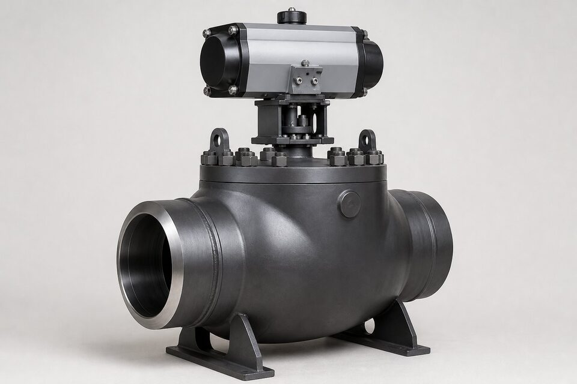

جایگاه مرجع شیرهای خط انتقال
خطوط انتقال، شریانهای اصلی صنعت نفت و گاز هستند و شیرآلات آنها باید سالها بدون نشتی و با قابلیت بازرسی کار کنند. این مرجع، الزامات طراحی، ساخت، تست و مدارک شیرهای خطوط انتقال را تعریف میکند و بر مرجع عمومی شیرآلات، الزامات تکمیلی دارد.

الزامات اصلی
- تمامعبور بودن مسیر جریان برای عبور پیگ.
- سطوح مشخصه محصول با عمق الزامات متفاوت.
- الزامات انتهای جوشی متناسب با ضخامت لوله.
- تستهای بدنه و نشیمنگاه سختگیرانه.
- مدارک کامل شامل گواهی مواد و گزارش تست.
- در بسیاری موارد، الزام طراحی فایر-سیف.
سطوح مشخصه محصول
سطوح مشخصه، عمق کنترل کیفیت را تعریف میکنند: از الزامات پایه تا بازرسیهای تکمیلی و مدارک بیشتر. انتخاب سطح بالاتر، هزینه را افزایش اما ریسک را کاهش میدهد. در خطوط اصلی انتقال معمولاً سطوح بالاتر الزام میشود و مرجع نهایی، مشخصه پروژه است.
تست و بازرسی
| تست | هدف |
|---|---|
| بدنه | اثبات تحمل فشار پوسته |
| نشیمنگاه | کنترل نشتی در وضعیت بسته |
| عملکرد | باز و بسته کامل بدون گیر |
| تکمیلی | بر اساس سطح مشخصه و سفارش |
نتایج تست باید در مدارک تحویل قابل ردیابی باشد.
نکات استعلام
- نوع شیر، سایز و کلاس فشاری را ذکر کنید.
- سطح مشخصه مورد نیاز پروژه را بنویسید.
- نوع انتها را مشخص کنید.
- الزامات فایر-سیف را در صورت نیاز اضافه کنید.
- مدارک تست و گواهی مواد را درخواست کنید.
انتهای اتصال
شیرهای خط انتقال معمولاً با انتهای جوشی برای اتصال مستقیم به لوله یا فلنجی برای نقاط دمونتاژ عرضه میشوند. در انتهای جوشی، ضخامت و پخ باید دقیقاً با لوله همبند هماهنگ باشد تا در محل اتصال پله یا تمرکز تنش ایجاد نشود. این هماهنگی در بازرسی قبل از جوش کنترل میشود.
بهرهبرداری و نگهداری
- عملکرد دورهای شیرهای کمکار برای جلوگیری از گیر کردن.
- پایش نشتی ساقه و نشیمنگاه در بازرسیهای دورهای.
- روانکاری مناسب قسمتهای متحرک طبق دستور سازنده.
- ثبت سوابق عملکرد برای تحلیل وضعیت.
- هماهنگی با برنامه پیگرانی خط.
نکته پایانی برای خریداران: هنگام مقایسه پیشنهادهای مختلف شیر خط انتقال، حتماً سطح مشخصه، نوع انتها و مدارک تست را در هر پیشنهاد کنترل کنید؛ تفاوت قیمت اغلب از همین موارد ناشی میشود، نه از کیفیت ظاهری بدنه.
جمعبندی
شیرهای خط انتقال، اجزای حساسی هستند که الزامات آنها از شیرآلات عمومی فراتر است. با استعلام دقیق بر اساس مرجع خط انتقال، از قابلیت اطمینان خط مطمئن شوید.
سوالات رایج
این مرجع برای چه شیرهایی کاربرد دارد؟
برای شیرهای توپی، دروازهای، یکطرفه و پلاگ که در خطوط انتقال نفت و گاز نصب میشوند. تمرکز آن بر قابلیت اطمینان، تمامعبور بودن و تستهای سختگیرانه است.
چرا تمامعبور بودن مهم است؟
در خطوط انتقال، ابزارکهای پیگ برای تمیزکاری و بازرسی داخل خط حرکت میکنند. شیر باید مسیر کاملاً همقطر با خط داشته باشد تا پیگ بدون گیر کردن عبور کند.
سطوح مشخصه محصول چیست؟
سطوحی که عمق الزامات طراحی، تست و مدارک را تعریف میکنند؛ هرچه سطح بالاتر باشد، الزامات سختگیرانهتر و مدارک کاملتر است. انتخاب سطح را مشخصه پروژه تعیین میکند.
تفاوت اصلی آن با مرجع عمومی شیرآلات چیست؟
الزامات مخصوص خط انتقال مانند تمامعبور بودن، تستهای تکمیلی، الزامات انتهای جوشی و مدارک بیشتر. مرجع عمومی برای شیرآلات فرایندی عمومی کاربرد دارد.
مطالب مرتبط
- شیر توپی (API 6D) — انواع و انتخاب
- راهنمای جامع شیر دروازهای
- راهنمای لوله خط انتقال؛ سطوح مشخصه و گریدها
- مرجع طراحی شیرآلات (ASME B16.34)
- راهنمای طراحی فایر-سیف شیر توپی (API 6D)
با ذکر سایز، کلاس، سطح مشخصه و نوع انتها، شیر توپی یا دروازهای منطبق با مرجع خط انتقال به همراه مدارک کامل عرضه میشود.
مشاهده صفحه محصول ← ثبت RFQ همین محصولتامین این تجهیزات را به پیشرو تجهیز فرتاک بسپارید
شرکت پیشرو تجهیز فرتاک تامینکننده تخصصی تجهیزات صنعتی برای پروژههای نفت، گاز، پتروشیمی، فولاد و نیروگاهی است. برای دریافت پیشنهاد فنی و قیمت، استعلام (RFQ) خود را ثبت کنید تا کارشناسان مهندسی فروش در کوتاهترین زمان پاسخ دهند.
- تامین شیرآلات صنعتیخانواده کامل شیر با گواهی مواد و تست
- تامین تجهیزات صنایع نفت و گازپکیج خطوط انتقال مطابق وندورلیست